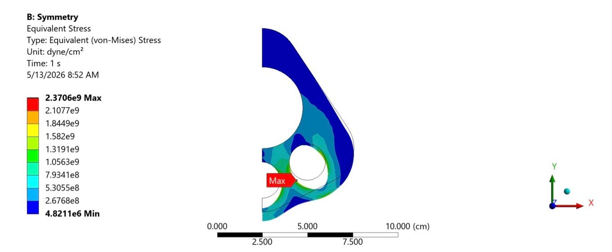
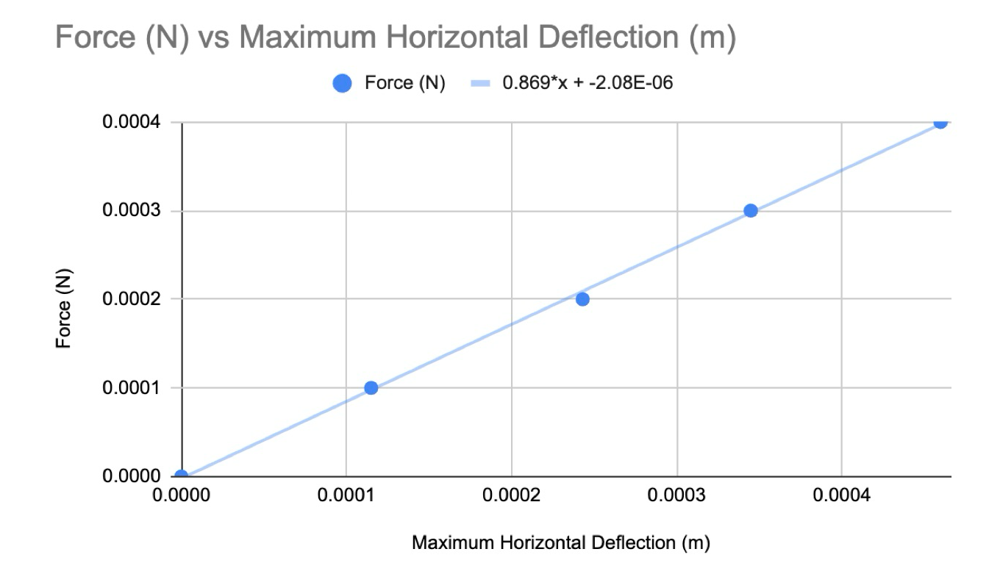
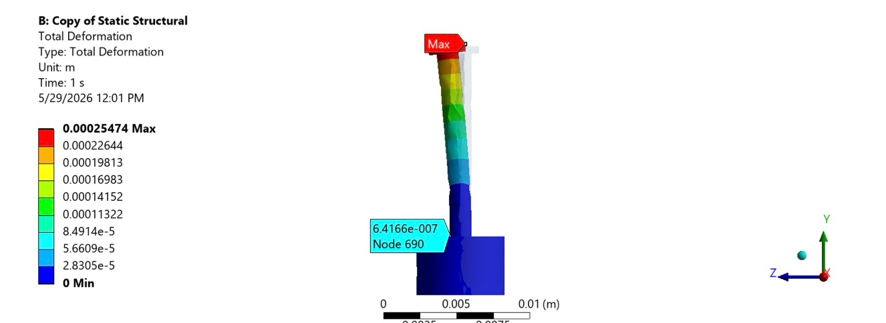
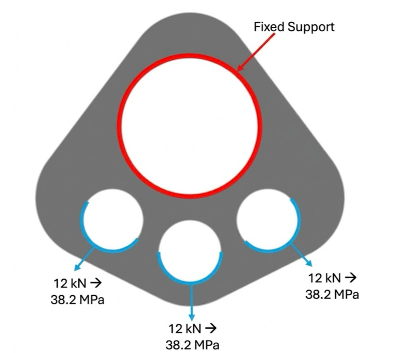
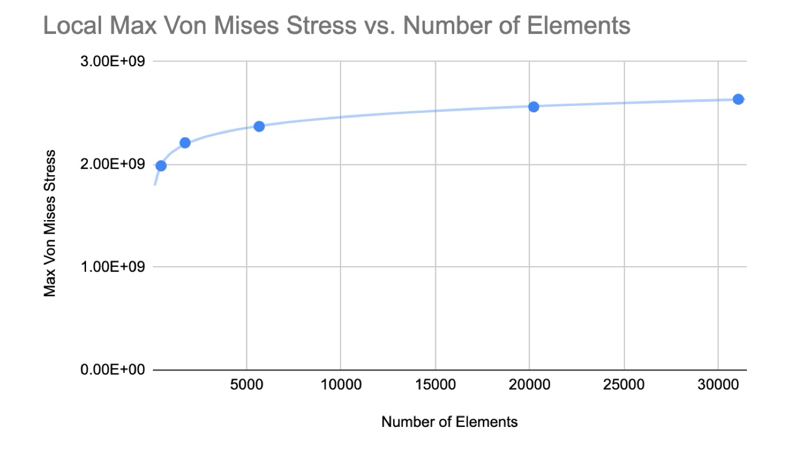
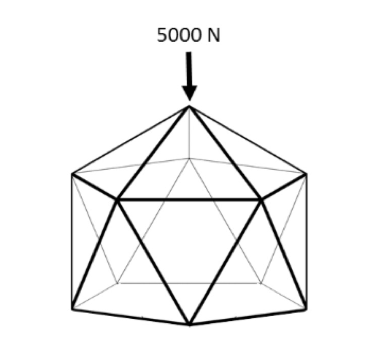
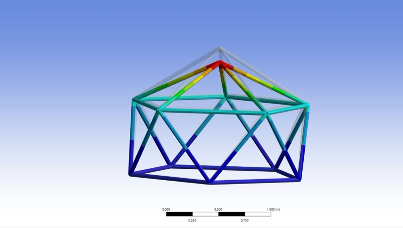

Structural FEA Studies
Three ANSYS analyses, each written up as an engineering memo: a heart-tissue micro-post for a cell biomechanics lab, an aluminum rigging plate, and a playground climbing structure. The common thread is proving the model before trusting the answer.
- My role
- Individual: modeling, analysis, and each memo
- Course
- UW ME 478, Finite Element Analysis
- Dates
- Mar – Jun 2026
- Tools
- ANSYS Mechanical 2024 R2 and DesignModeler, Excel


- 1.82%micro-post model error vs. beam theory
- 0.869 N/mmicro-post stiffness extracted
- 2.1rigging-plate factor of safety at 3 × 12 kN
- 8.16worst-case truss factor of safety in buckling
The problem
Each study asked a practical question (is this structure safe, or how stiff is this part?), and each answer is only as good as the model behind it. So every analysis included a check: a mesh-convergence study, a comparison of element types, or a comparison against hand calculations.
My role
Individual work. For each study I built the geometry, set materials, loads, and boundary conditions, ran the convergence or validation study, and wrote the memo with its recommendations.
Study 1 · Biomechanics
Silicone micro-post for engineered heart tissue
A cell biomechanics lab measures how hard engineered heart tissue contracts by watching flexible silicone (PDMS) posts bend. The lab was considering a new hollow post, and the analysis had to predict its stiffness. PDMS is soft and nearly incompressible (E = 2.5 MPa, ν = 0.499).
Validation first. Under a 0.2 mN side load on the cap, Euler–Bernoulli beam theory predicts 238.7 µm of tip deflection. I ran 12 meshes, three element types at four sizes each, and compared every one to that value:
| Element size | Linear tet (Tet4) | Quadratic tet (Tet10) | Quadratic hex (Hex20) |
|---|---|---|---|
| 1 mm | 52.3 µm (78% low) | 243.0 µm (1.8%) | 229.9 µm (3.7%) |
| 0.5 mm | 59.9 µm (75%) | 231.2 µm (3.1%) | 230.8 µm (3.3%) |
| 0.1 mm | 151.2 µm (37%) | 232.4 µm (2.6%) | 232.8 µm (2.5%) |
| 0.05 mm | 170.9 µm (28%) | 232.9 µm (2.4%) | 233.1 µm (2.4%)* |
*The 0.05 mm hex mesh failed; this value is at 0.052 mm.
Linear tetrahedra were far too stiff even at 190,000 elements, while quadratic tets and hexes all landed within 2–4% of theory. The best case was quadratic tets at 1 mm (643 elements, 1.82% error). Theory itself treats the cap as part of a uniform hollow tube, so a few percent of disagreement is expected.
Stiffness. Sweeping the load from 0 to 0.4 mN gave a linear response with a stiffness of 0.869 N/m for the post alone. Modeling the post on its base dropped it to 0.785 N/m (−10%), because the base also deflects and that rotation carries up the whole shaft. That's a correction the beam equation can't capture, and it matters when converting post deflection into tissue force.




Study 2
Aluminum rigging plate
A rigging plate for lifting and rescue carries three 12 kN loads through its lower rings, applied as 38.2 MPa of pressure on the ring edges, with the top hole fixed. I modeled it as a 1 cm plate in 2D and used its symmetry to halve the model (aluminum: E = 72 GPa, ν = 0.33, yield 500 MPa).
Convergence. Peak stress sits at a stress concentration, so I refined the mesh two ways. Globally, from 2 cm to 0.02 cm elements (15 to 53,574 elements), and locally with a 1 cm sphere of influence at the hot spot (457 to 31,063 elements). Both approached about 250 MPa. The local mesh got there with a fraction of the elements and run time, so a 0.02 cm local size (5,659 elements) was the efficient choice.




Result. Peak stress was 237 MPa at the edge of a load hole, a factor of safety of 2.1 against yield. It kept creeping up with refinement, reaching 264 MPa at the finest local mesh. A single load at the center ring was the worse case at 331 MPa. The plate is safe as rated, and I recommended a thicker plate to add margin at the hole edges.
Study 3
Playground climbing structure
A steel climbing dome at Seattle's Gas Works Park, modeled as a pin-jointed truss (11 nodes, 25 members) with a worst-case 5,000 N load at the top node. I compared 4 cm and 2 cm rods, with the base either staked down (fixed) or resting on the ground (free to slide), and checked each case for both stress and Euler buckling.




| Case | Max deflection | Max stress | FoS, stress | FoS, buckling |
|---|---|---|---|---|
| 4 cm rods, fixed base | 0.027 mm | 1.51 MPa | 185 | 130 |
| 2 cm rods, fixed base | 0.108 mm | 6.05 MPa | 46 | 8.16 |
| 4 cm rods, free base | 0.027 mm | 1.51 MPa | 186 | 131 |
| 2 cm rods, free base | 0.109 mm | 6.01 MPa | 47 | 8.20 |
Result. Axial forces barely changed between cases, so stress scaled with rod area: halving the diameter roughly quadrupled the stress. The support condition hardly mattered. Buckling, not yield, governs, and even the thin rods keep a factor of safety above 8. I recommended the 4 cm rods for margin, plus further checks for loads that aren't straight down, such as a child swinging from the side.
Skills used
- ANSYS Mechanical and DesignModeler
- Global and local mesh refinement
- Element-type selection
- Validation against beam theory
- Euler buckling checks
- Symmetry and 2D simplification
- Soft-material (PDMS) modeling
- Technical memo writing